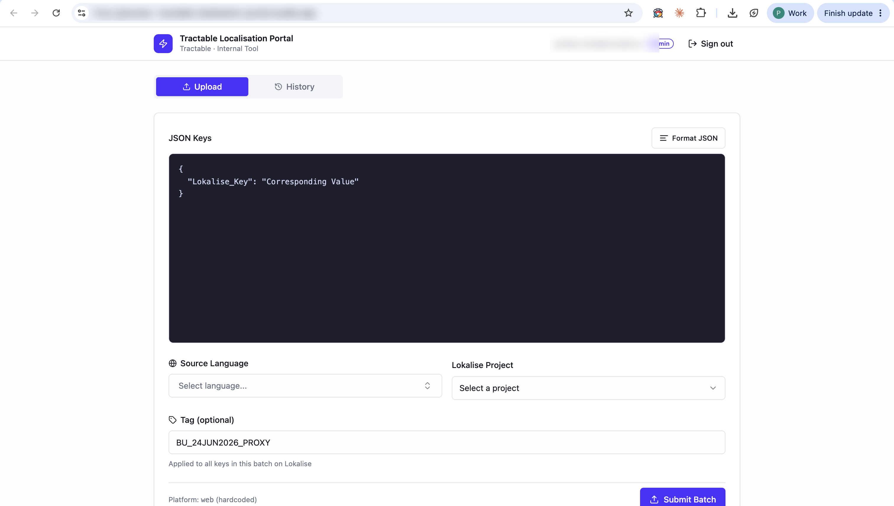
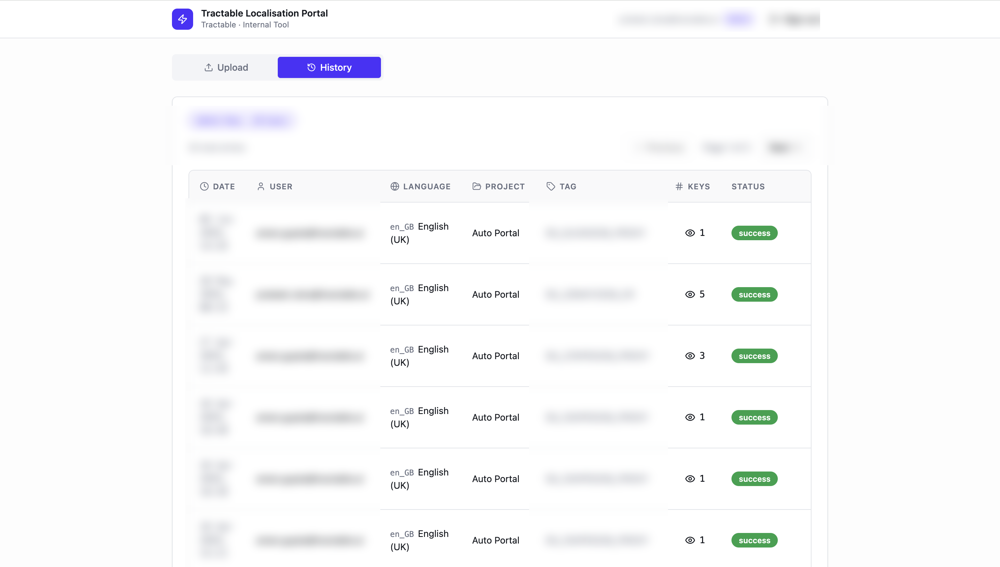

Tractable · 2026
As the owner of internationalization and localization for Tractable's new Auto Portal, I was the single point of dependency for getting any UI string into Lokalise and translated. When adding more Lokalise seats wasn't an option, I built a self-serve proxy layer instead: prototyped in Lovable, hardened in Claude Code, and rolled out internally with auth and a full audit trail.

Upload screen

History screen
Estimate based on Lokalise's public pricing: Growth ($375/mo, 10 seats) → Advanced ($999/mo, 15 seats).
I owned internationalization and localization for Tractable's new Auto Portal: every UI string added to the product needed to flow into Lokalise and come back translated into each required language. Lokalise was the team's source of truth for translation management, but project licensing capped the number of seats, and I held one of them.
Every key, from every engineer, had to go through me. I was the only person who could log into Lokalise and push new strings, which meant I was the bottleneck on a process that should have been routine. I raised it with leadership and asked about adding more seats; the answer was no, seats were intentionally capped to control the licensing bill. So more seats wasn't on the table, but the bottleneck still needed solving.
Engineers didn't actually need full Lokalise access; they needed one narrow action: submit a set of keys for a given language and project. That's a much smaller surface than a Lokalise seat, and it's one I could build without waiting on procurement.
Built a first version fast to test whether the interaction model actually held up: paste a JSON object of keys, pick the source language and target Lokalise project, optionally tag the batch, submit. I modeled it directly on Lokalise's own upload screen rather than designing a new flow from scratch, an interaction engineers already trusted, which is largely why it worked as expected from day one with no real iteration needed after launch.
Once the workflow was validated, I rebuilt it properly: Tractable SSO so only employees could submit, a real Lokalise API integration in place of the prototype's stub, and a history view logging every submission by date, user, language, project, tag, key count, and status, so the proxy layer didn't trade one bottleneck for an untraceable one. I also drew a deliberate line at uploads, not deployments: the proxy pushes keys into Lokalise but never pushes translations live, and I kept that gate for myself on purpose, reviewing everything added each day so I could still catch anything that needed editing or removing before it shipped.
No formal launch: I shared it with the engineers who kept pinging me for key uploads, and adoption spread from there as people saw it save them a round trip through me.
The tool is still running. The bottleneck isn't.